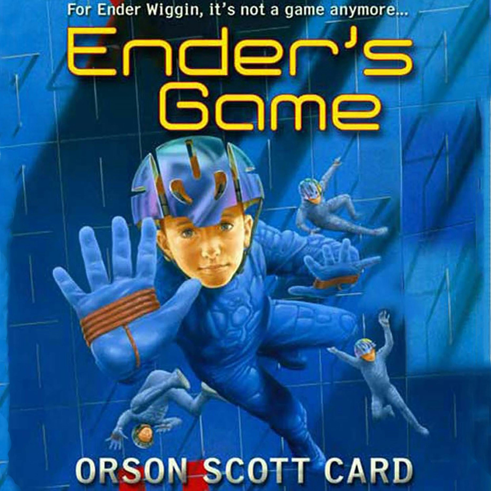

Ender Wiggin Startup CEO - Ender Wiggin Startup CEO - Paragraph 2
Orson Scott Card's Ender's Game is a science fiction classic, but you can also read it as a leadership manual. I fell in love with it as a 12-year-old kid. But it was my Spiff co-founder, Michael Ries, who helped see some of the enduring leadership principles in Ender Wiggin, the reluctant commander of the International Fleet's child armies. These principles still resonate powerfully with the realities of startup leadership.
Ender Wiggin Startup CEO - Ender Wiggin Startup CEO - Paragraph 3
His journey through Battle School mirrors the challenges of founders leading teams under immense pressure, with limited resources, and against overwhelming odds.
Ender Wiggin Startup CEO - Here Are Twelve Leadership Lessons - Paragraph 4
Here are twelve leadership lessons from Ender Wiggin that apply directly to running a startup.
1. People First
Ender Wiggin Startup CEO - People First - Paragraph 5
Even in war, humans and ethics are more important than the "game." Ender embodies this when he reflects: "In the moment when I truly understand my enemy, understand him well enough to defeat him, then in that very moment I also love him."
Ender Wiggin Startup CEO - People First - Paragraph 6
Great founders understand that startups are not just about growth metrics. They are about people—teammates, customers, and even competitors. Metrics are the scorecard, but people are the reason to play.
2. Earn Credibility
Ender Wiggin Startup CEO - Earn Credibility - Paragraph 7
At Battle School, Ender refused to hide behind his rank. When he commanded Dragon Army, he entered the battle room alongside his soldiers, proving his mastery before asking anything of them.
Ender Wiggin Startup CEO - Earn Credibility - Paragraph 8
Startup leaders must do the same. Credibility is earned through competence and "leading from the front." A CEO who demonstrates excellence earns the right to demand it.
3. Love the Game
Ender Wiggin Startup CEO - Love the Game - Paragraph 9
The teachers at Battle School stacked the game against Ender—pitting him against multiple armies, reducing preparation time, and changing the rules. Yet, "The game was rigged. But Ender loved the game."
Ender Wiggin Startup CEO - Love the Game - Paragraph 10
Founders face equally unfair conditions: entrenched competitors, scarce capital, volatile markets. To persist, they must love their game with an energy to overcome the odds.
4. Align the Frame
Ender Wiggin Startup CEO - Align the Frame - Paragraph 15
In zero-gravity environments, it's not obvious how to frame cardinal directions themselves. What direction is up? What direction is down? Ender established a clarity of objective with a simple phrase: "The enemy's gate is down." By defining the direction, he established a guiding framework and a win condition. When Ender taught his army that "down" was always toward the enemy's gate, he didn't just give orientation—he changed how they saw the battlefield. This clarity gave his soldiers a unifying vision.
Ender Wiggin Startup CEO - Align the Frame - Paragraph 16
Leaders in startups must do the same. Their task is to reframe problems so that everyone's mental model aligns with the ultimate mission. A well-framed perspective enables collective focus and creativity.
5. Understand Win Conditions
Ender Wiggin Startup CEO - Understand Win Conditions - Paragraph 11
Ender Wiggin Startup CEO - Understand Win Conditions - Paragraph 12
For startups, understanding the true win conditions—whether profitability, market share, or category leadership—allowed him to change the shape of the game. He found ways to play the game in different ways than anybody else had. In one scene, all of his soldiers were frozen but he still managed to get a single frozen solider into th enemy gate first. Nobody had tried this before because they thought that if everybody was frozen, you couldn't win. Ender didn't break any rules, he just found a new way to win. Strategy follows from knowing what "winning" actually means on a deep level and in new ways.
6. Turn Weakness into Strength
Ender Wiggin Startup CEO - Turn Weakness into Strength - Paragraph 13
Ender's teachers deliberately isolated him, stripping him of friends and support. Instead of breaking him, this forged resilience and forced him to develop new strategies.
Ender Wiggin Startup CEO - Turn Weakness into Strength - Paragraph 14
Similarly, founders often face setbacks, rejections, and downturns. By reframing weakness as opportunity, leaders can convert disadvantage into differentiation.
7. Absorb the Pressure
Ender Wiggin Startup CEO - Absorb the Pressure - Paragraph 17
Ender deliberately made himself the harsh one so his toon leaders could maintain loyalty with their soldiers: "He made himself the enemy so his toon leaders could be friends." I've heard there are three types of team members: "conductors", "amplifiers" and "dampeners." Conductors pass along stress levels that they receive from those around them. Amplifiers actually increase stress levels. Dampeners reduce stress levels. By being the harsh one, Ender was a dampener and reduced stress levels for his toon leaders.
Ender Wiggin Startup CEO - Absorb the Pressure - Paragraph 18
Founders often absorb the greatest stress themselves. By shouldering the burden of investor demands, market pressures, and existential risk, they allow managers to foster trust and motivation within their teams.
8. Push Your Best Harder
Ender Wiggin Startup CEO - Push Your Best Harder - Paragraph 19
Ender saw Bean's extraordinary potential and pushed him relentlessly: "The others can make mistakes; Bean can't."
Ender Wiggin Startup CEO - Push Your Best Harder - Paragraph 20
Exceptional talent demands higher standards. Great leaders do not let their strongest players coast; they challenge them to rise even higher, unlocking outsized contributions that can change the trajectory of a company.
9. Decentralize Creativity
Ender Wiggin Startup CEO - Decentralize Creativity - Paragraph 21
Ender thrived not by monopolizing strategy but by distributing it. He empowered his toon leaders like Bean to lead special units that innovated tactics, often changing the course of battles.
Ender Wiggin Startup CEO - Decentralize Creativity - Paragraph 22
Startups thrive when creativity is decentralized. If all innovation originates with the CEO, the company is constrained. Empowered teams create exponential capacity for problem solving.
10. Balance Group vs. Individual
Ender Wiggin Startup CEO - Balance Group vs Individual - Paragraph 23
Ender was harsh in group settings but tender in private. After publicly pressing Bean, he later admitted vulnerability by his bunk: "I need you."
Ender Wiggin Startup CEO - Balance Group vs Individual - Paragraph 24
Startup leaders must strike the same balance—demanding accountability at the team level while showing empathy and personal support in one-on-one settings. Both dimensions are necessary for sustained performance.
11. Blur Practice and Competition
Ender Wiggin Startup CEO - Blur Practice and Competition - Paragraph 25
Ender trained his army under impossible conditions—two battles in a day, no preparation, enemies stacked against him. When real war arrived, it felt almost easier. His philosophy: practice as if it's competition; compete as if it's practice.
Ender Wiggin Startup CEO - Blur Practice and Competition - Paragraph 26
For startups, preparation and execution are inseparable. Internal pitches should be treated with the intensity of investor meetings. Real launches should be approached with the experimental curiosity of practice.
12. Learn from the Enemy
Ender Wiggin Startup CEO - Learn from the Enemy - Paragraph 27
Ender's final teacher, Mazer Rackham, summarized the deepest principle of command:
Ender Wiggin Startup CEO - Learn from the Enemy - Paragraph 28
"There is no teacher but the enemy. No one but the enemy will tell you what the enemy is going to do. Only the enemy shows you where you are weak. Only the enemy shows you where he is strong."
Ender Wiggin Startup CEO - Learn from the Enemy - Paragraph 29
In startups, competitors are the truest teachers. They reveal weaknesses, validate strengths, and define the contours of the market. Wise founders study them carefully.
Conclusion
Ender Wiggin Startup CEO - Conclusion - Paragraph 30
Ender Wiggin never sought command, yet he became a leader because necessity demanded it. He mastered empathy, reframing, resilience, and strategy—traits as essential in startups as in interstellar war.
Ender Wiggin Startup CEO - Conclusion - Paragraph 31
His ultimate lesson endures for every founder and CEO: the enemy's gate is still down.